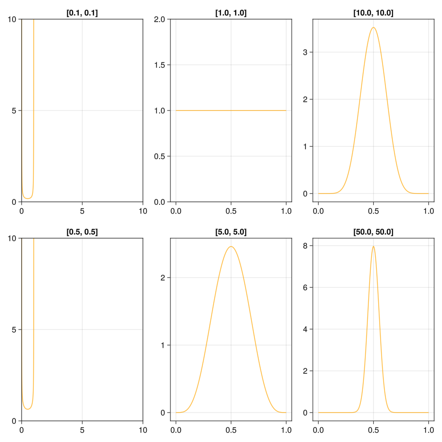
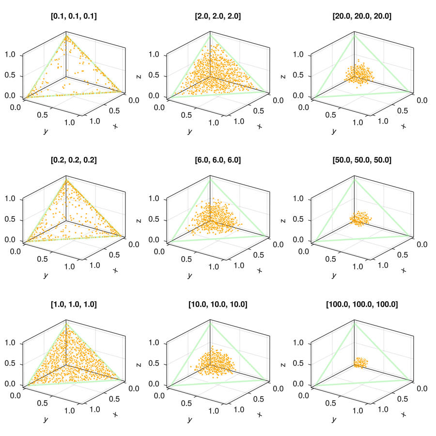

Code
using Distributions, GLMakie, Random, Pipe
Random.seed!(34343)TaskLocalRNG()dirichlet分布是Beta 分布的多元泛化
using Distributions, GLMakie, Random, Pipe
Random.seed!(34343)TaskLocalRNG()Beta分布的定义:
@doc(Beta)Beta(α, β)The Beta distribution has probability density function
\[ f(x; \alpha, \beta) = \frac{1}{B(\alpha, \beta)} x^{\alpha - 1} (1 - x)^{\beta - 1}, \quad x \in [0, 1] \]
The Beta distribution is related to the Gamma distribution via the property that if \(X \sim \operatorname{Gamma}(\alpha)\) and \(Y \sim \operatorname{Gamma}(\beta)\) independently, then \(X / (X + Y) \sim \operatorname{Beta}(\alpha, \beta)\).
Beta() # equivalent to Beta(1, 1)
Beta(α) # equivalent to Beta(α, α)
Beta(α, β) # Beta distribution with shape parameters α and β
params(d) # Get the parameters, i.e. (α, β)External links
Beta分布有两个参数α,β, 当两个参数取不同值的时候, 分布的概率密度函数变现不同.
pdf曲线xs=range(0,1,100)
params=[[.1,.1],[.5,.5],[1,1],[5,5],[10,10],[50,50]]
#sas1 = @pipe params1.|>(pdf(Beta(_...),xs))
function plot_res()
fig = Figure(resolution=(900,900))
axs = [Axis(fig[i, j]) for i in 1:2, j in 1:3]
for (ax,vec) in zip(axs,params)
ax.title="$vec"
lines!(ax,Beta(vec...),color=(:orange, 0.8))
end
fig
end
plot_res()
@doc(Dirichlet)DirichletThe Dirichlet distribution is often used as the conjugate prior for Categorical or Multinomial distributions. The probability density function of a Dirichlet distribution with parameter \(\alpha = (\alpha_1, \ldots, \alpha_k)\) is:
\[ f(x; \alpha) = \frac{1}{B(\alpha)} \prod_{i=1}^k x_i^{\alpha_i - 1}, \quad \text{ with } B(\alpha) = \frac{\prod_{i=1}^k \Gamma(\alpha_i)}{\Gamma \left( \sum_{i=1}^k \alpha_i \right)}, \quad x_1 + \cdots + x_k = 1 \]
# Let alpha be a vector
Dirichlet(alpha) # Dirichlet distribution with parameter vector alpha
# Let a be a positive scalar
Dirichlet(k, a) # Dirichlet distribution with parameter a * ones(k)let
vecs = [[0.1,0.1,0.1],[0.2,0.2,0.2],[1, 1, 1], [2, 2, 2], [6, 6, 6], [10, 10, 10],[20,20,20],[50,50,50],[100,100,100]]
sas = @pipe vecs |> Dirichlet.(_) |> rand.(_, 1000)
xs = ys = zs = range(0, 1, 100)
function plot_res()
fig = Figure(resolution=(900,900))
axs = [Axis3(fig[i, j];azimuth=0.2pi) for i in 1:3, j in 1:3]
for (ax, sa,vec) in zip(axs, sas,vecs)
ax.title="$vec"
lines!(ax, [1, 0, 0,1], [0, 1, 0,0], [0, 0, 1,0];color=(:lightgreen,0.5),linewidth=3)
scatter!(ax, eachrow(sa)...; markersize=4, color=(:orange, 0.9))
end
fig
end
plot_res()
end